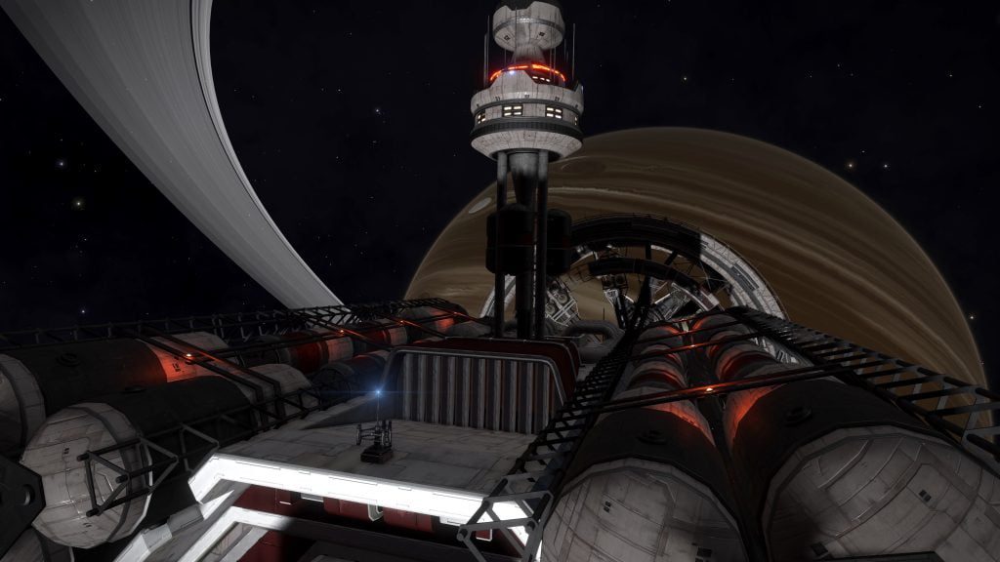

The Survey Vessel Victoria’s Song can be found in the HIP 17125 system, orbiting body A 3.
The existence of this vessel was hinted by the logs at Relay Station PSJ-17, and revealed by the nearby listening post:
LISTENING POST SIGNAL DATA
…Unknown Subroutine NNP-292-A Detected…
Signal Match Detected in HIP 17125.
…Partial Decryption Achieved…
You can’t just arrest us, we haven’t done anything wrong….
This is a registered survey mission, we have all the paperwork…
please listen to me….No…please…we’re an unarmed survey team….. pIease…………
Black flight 12 to command. Site secured…clean up underway.
:…Beacon Signal Interrupted…
There is also a Local News article in Pleione dated 26 June 3303 that mentions the ship:
INVESTIGATION INTO FAKE SURVEY MISSION BREAKS SMUGGLING RING.
26 JUN 3303
Authorities have made a series of arrests linked to a smuggling ring operating in the Pleiades region.
The smugglers were using a registered survey vessel The Victoria’s Song to move large quantities of illegal items through the sector.
The ship has been disabled and any attempt to board or remove the ship from it’s current location will be considered to be criminal act

A series of four Ship Log Uplink points can be located along the hull. Deploy your ship’s hardpoints and use the onboard Data Link Scanner within 200m of each post to scan them and retrieve the logs. In addition to the text, each log is accompanied by an audio recording:
SURVEY VESSEL VICTORIA’S SONG, COMMANDER’S LOG 1/4:
Some of the crew are not happy we’re working for the Feds, but this deal is too good to pass up.
With all the expansion going on in this region, we need to make sure we’re in at the beginning to secure the contracts we need.
This Survey mission is just that. A simple rock hop, scanning for minerals.
SURVEY VESSEL VICTORIA’S SONG, COMMANDER’S LOG 2/4:
We arrived in orbit around planet A 7 A a day ago, it’s been all hands on deck to make sure all the equipment is ready for launch down to surface.
While the majority of our planet scans just showed the usual mineral data, there is one area on this rock that is giving off some unusual readings.
If there is any profit to be made from this trip, I’ll bet my ship it’s going to be found there.
SURVEY VESSEL VICTORIA’S SONG, COMMANDER’S LOG 3/4:
We’ve stumbled onto something big. I don’t know what it is, or who built it, but we’ve definitely hit the mother load.
Aries Dark Region DB-X d1-63 is gonna have our names on it.
First things first, I’ve got to make sure all this is by the numbers. I don’t want this going south because we didn’t fill in the correct paperwork.
I’m calling it in.
SURVEY VESSEL VICTORIA’S SONG, COMMANDER’S LOG 4/4:
Security vessel, please respond… Hold your fire! This is a registered survey mission, we have all the correct paperwork… Listen to me! You can’t just arrest us…we haven’t done anything wrong, we have rights.
Repeat we’re an unarmed survey team on a registered mission.
We surrender! Please!
The logs give the location of a Thargoid Structure in the Aries Dark Region DB-X d1-63 system on body A 7 a, at 37.0934, -40.1055 (in Live/4.0) or at 25.5549, 78.1776 (in Legacy/3.8).